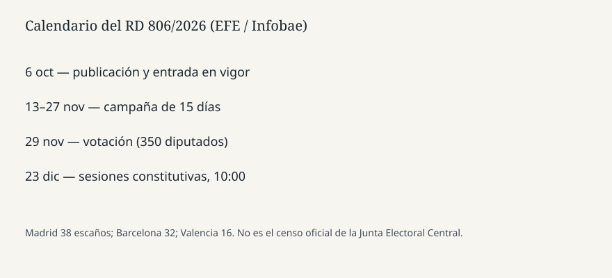

Madrid · Elecciones · 6 de octubre de 2026
El BOE publicó el Real Decreto 806/2026 y convocó elecciones para el 29 de noviembre
_01.jpg)
Lo que coinciden las agencias
El Boletín Oficial del Estado publicó el martes 6 de octubre de 2026 el Real Decreto 806/2026, de disolución del Congreso de los Diputados y del Senado elegidos el 23 de julio de 2023 y de convocatoria de elecciones generales para el domingo 29 de noviembre de 2026. EFE, recogida por Infobae, dice que el texto está expedido por el rey Felipe VI, refrendado por el presidente del Gobierno, Pedro Sánchez, y que entra en vigor el mismo día de la publicación. Consta de seis artículos y una disposición de vigencia. Ese es el paso que el lunes era todavía un anuncio en La Moncloa.
El artículo 2 fija la votación. El artículo 3 remite al anexo de escaños según el artículo 162 de la Ley Orgánica 5/1985 del Régimen Electoral General. EFE detalla Madrid con 38 diputados, Barcelona con 32, Valencia con 16, Sevilla y Alicante con 12, Málaga con 11 y Murcia con 10. Baleares, Vizcaya, Cádiz, A Coruña y Las Palmas eligen ocho. Soria elige dos. Ceuta y Melilla, uno cada una. El total de la Cámara sigue siendo 350. En el Senado, cuatro por provincia; tres en Gran Canaria, Mallorca y Tenerife; uno en las islas menores citadas; dos en Ceuta y dos en Melilla. EFE suma 208 o describe el reparto; otra nota de la misma agencia dice 209 senadores. Esa diferencia de uno no está resuelta en estas piezas y no debe tratarse como censo cerrado de la Junta Electoral Central.
El calendario, que sí está escrito
La campaña dura quince días: desde las 00:00 del viernes 13 de noviembre hasta las 24:00 del viernes 27 de noviembre. El día 28 es jornada de reflexión, aunque las notas no se detienen en ese nombre. Las cámaras elegidas se reúnen en sesión constitutiva el 23 de diciembre a las 10:00. EFE recuerda que la Constitución da un máximo de 25 días desde la votación y que el día 24 sería Nochebuena, de modo que el decreto adelanta un día el tope. El plazo de 54 días entre la publicación y la votación es el que fija la LOREG para unas generales. Por eso el anuncio del lunes y la gaceta del martes encajan en la misma fecha.
La disolución es automática con la publicación. No hace falta un segundo voto del Pleno para vaciarse: el Pleno ya no está en funciones ordinarias. La Diputación Permanente conserva competencias tasadas, entre ellas la convalidación de decretos-ley urgentes. Esa pieza es distinta y se trata en el artículo de vivienda de este mismo dossier.
Lo que es solo cita o lectura
Sánchez dijo el lunes que informó al rey antes de la declaración institucional. El decreto de hoy es el refrendo publicado, no la transcripción de esa conversación. Las motivaciones —el rechazo del viernes a los decretos de vivienda, las causas judiciales, Ceuta— aparecen en columnas y en el discurso. El BOE no motiva en clave de partido; convoca. Llamar al adelanto “casi ocho meses antes” es aritmética de EFE respecto de una legislatura que podía llegar a 2027. No es una fecha de caducidad que el decreto cite.
RTVE enlaza la publicación del BOE en su directo de elecciones. La página de Moncloa del lunes anunciaba el Consejo extraordinario. Hoy la gaceta es la fuente de rango superior para la fecha. Hasta que un lector abra el PDF, las cifras de escaños descansan en la agencia que dice haberlo leído. Por eso este texto marca el desfase de un senador y no inventa el anexo.
Lo que esta pieza no es
No es una encuesta. No es el censo electoral ni el decreto de subvenciones. No es la prueba de que el PNV convalidará nada. No es una disolución del Gobierno: el presidente sigue en el cargo hasta el relevo posterior a las elecciones. La fotografía es la fachada del Congreso en archivo, no el quiosco del BOE y no una urna.
El hecho del día, respecto del lunes, es estrecho: el real decreto tiene número, 806/2026, está en el boletín, disuelve las dos cámaras de 2023 y llama a las urnas el 29 de noviembre, con campaña escrita del 13 al 27.

Artículos fuente y puntuaciones
| Medio | Titular | T | N | C |
|---|---|---|---|---|
| EFE vía Infobae | El BOE publica el decreto que convoca las elecciones generales para el 29 de noviembre | 93 | 0 | 96 |
| EFE vía Infobae | El BOE publica el RD de disolución de las Cortes y la convocatoria electoral para el 29 de noviembre | 92 | 0 | 94 |
| RTVE | Elecciones generales: el BOE publica la disolución de las Cortes y la convocatoria | 88 | -4 | 86 |
Las dos notas de EFE son la lectura del decreto. La duda de 208 frente a 209 senadores baja un punto la segunda. RTVE mezcla la gaceta con el directo político del día.